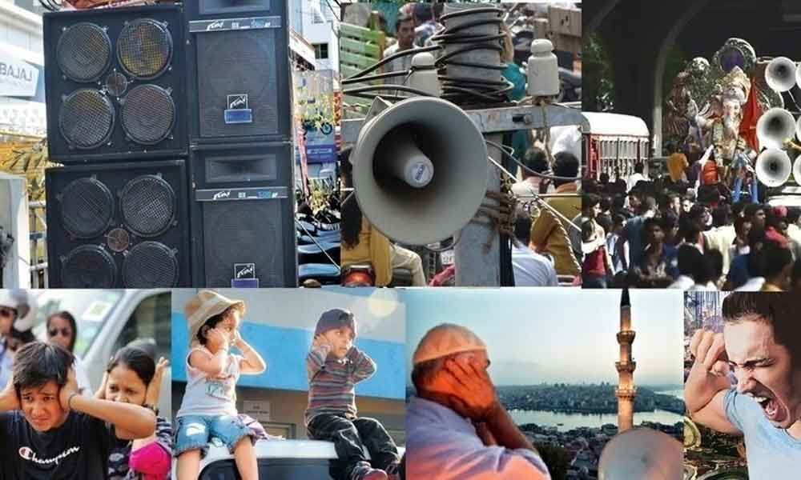
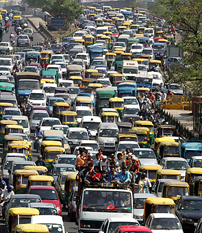

NOISE POLLUTION

Noise pollution, also known as environmental noise or sound pollution, is the propagation of noise with ranging impacts on the activity of human or animal life, most of them harmful to a degree. The source of outdoor noise worldwide is mainly caused by machines, transport, and propagation systems. Poor urban planning may give rise to noise disintegration or pollution, side-by-side industrial and residential buildings can result in noise pollution in the residential areas. Some of the main sources of noise in residential areas include loud music, transportation (traffic, rail, airplanes, etc.), lawn care maintenance, construction, electrical generators, wind turbines, explosions, and people.
Documented problems associated with noise in urban environments go back as far as ancient Rome. Today, the average noise level of 98 decibels (dB) exceeds the WHO value of 50 dB allowed for residential areas. Research suggests that noise pollution in the United States is the highest in low-income and racial minority neighborhoods, and noise pollution associated with household electricity generators is an emerging environmental degradation in many developing nations.

High noise levels can contribute to cardiovascular effects in humans and an increased incidence of coronary artery disease. In animals, noise can increase the risk of death by altering predator or prey detection and avoidance, interfere with reproduction and navigation, and contribute to permanent hearing loss. A substantial amount of the noise that humans produce occurs in the ocean. Up until recently, most research on noise impacts has been focused on marine mammals, and to a lesser degree, fish.
In the past few years, scientists have shifted to conducting studies on invertebrates and their responses to anthropogenic sounds in the marine environment. This research is essential, especially considering that invertebrates make up 75% of marine species, and thus compose a large percentage of ocean food webs. Of the studies that have been conducted, a sizable variety in families of invertebrates have been represented in the research. A variation in the complexity of their sensory systems exists, which allows scientists to study a range of characteristics and develop a better understanding of anthropogenic noise impacts on living organisms.